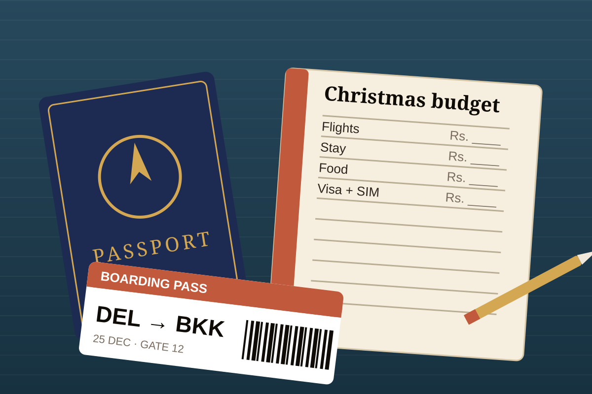

Late December is the most expensive stretch of the year for flights and hotels. The good news is that several countries within a few hours’ flight of India stay affordable if you pick the right base, book early and dodge the peak days. This guide covers seven destinations that work well for Indian passport holders: what the entry rules look like right now, what December weather to expect, where to stay, and how each place handles Christmas.
It is written for budget travellers, but “budget” here does not mean bare-bones. The aim is to spend on the things that matter and skip the ones that do not.
How We Chose These Trips
Every destination below had to pass five tests. Entry had to be simple for an Indian passport: visa-free, an online authorisation, or an e-visa that is quick to get. December had to fall in or near the dry season. The country had to be well connected from Indian cities so you are not paying for long layovers. Local costs for food, stays and transport had to be low enough to stretch a modest budget. And Christmas had to either feel festive or, at minimum, not shut the place down.
We have deliberately left out expensive favourites such as Singapore, Japan and Dubai. They are wonderful at Christmas, and we have separate guides to Christmas in Singapore, Christmas in Japan and Christmas in Dubai, but they are not where a tight budget goes furthest.
The Seven at a Glance
The budget column is a relative ranking, not a rupee quote. Fares and room rates swing too much in late December for a fixed number to be honest, so compare prices for your own dates.
| Destination | Entry for Indians | December weather | Budget level | Ideal stay |
|---|---|---|---|---|
| Thailand | Visa-free, 30 days; digital arrival card | Dry and sunny on the Andaman coast | Low to medium | 6 to 8 nights |
| Vietnam | e-Visa | Dry in the south; cool in Hanoi; wet on the central coast | Low | 6 to 9 nights |
| Sri Lanka | Online ETA, 30 days | Dry and sunny on the south and west coast | Low to medium | 5 to 7 nights |
| Malaysia | Visa-free, 30 days, until Dec 31, 2026; digital arrival card | Warm, with showers in cities; west coast islands best | Low to medium | 5 to 7 nights |
| Bali | Visa on arrival | Wet season: humid with regular rain | Medium | 5 to 7 nights |
| Cambodia | e-Visa or visa on arrival | Dry, with cooler mornings | Low | 4 to 5 nights |
| Nepal | No visa needed | Cold and clear; mild in Pokhara | Lowest | 5 to 7 nights |

How to Keep a Christmas Trip Cheap
Where you go matters, but when and how you book matters just as much. These habits save more than any single destination choice.
- Shift your dates by a few days. Flights and hotels peak in the days around December 20 to January 3. Leaving a few days earlier or returning after the first week of January often changes the fare noticeably. Check a flexible-date calendar before you fix leave.
- Compare one-way fares. Mixing an outbound on one airline with a return on another can beat a round-trip ticket, particularly on busy routes.
- Pick one base, maybe two. Every hop adds a transfer, a baggage fee or a lost half-day. For a week or less, a single city plus one beach or hill town is plenty.
- Ask about gala dinners. Many resorts add a compulsory Christmas Eve or New Year’s Eve dinner supplement. It can add a lot to the bill, so check before you pay.
- Book refundable stays first. Free-cancellation rooms let you lock a price now and keep hunting for a better one.
- Stay a short ride from the centre. A neighbourhood one or two stops away from the busiest area is often cheaper and quieter, and you save more than the transport costs.
- Sort data and money early. A local SIM or eSIM usually costs far less than international roaming. Carry a forex card plus a small amount of local cash, and check your bank’s foreign transaction fees.
1. Thailand: The Easiest First Trip Abroad
Thailand remains visa-free for Indian tourists, but the allowed stay was cut from 60 days to 30 days for entries from September 15, 2026. For a Christmas holiday that is more than enough. You also need to complete the Thailand Digital Arrival Card online before you fly, and it is free.
December is high season on the Andaman coast, with calm seas and dry weather around Krabi and Phuket. The Gulf islands, including Koh Samui, can still be wet early in the month, so the Andaman side is the safer pick. Phuket’s prices spike hardest at Christmas, which is why we suggest Krabi, Ao Nang or Railay for the beach half of the trip.
Bangkok makes a good Christmas base. The big shopping malls around Siam and Rama I Road go all out on trees and lights, street food keeps your daily spend low, and the Skytrain and metro make getting around cheap and simple. Budget travellers get the best value by staying in guesthouses and mid-range hotels near a train station rather than on the riverfront. See our Top 15 Christmas Destinations in Asia for more on festive Bangkok and the islands.
2. Vietnam: Huge Value, but Pick Your Region
Indian citizens need an e-visa for Vietnam. Apply on the official government portal and allow a few days for processing, rather than leaving it to the week of travel. Avoid look-alike agency sites that charge extra.
Vietnam is long and its weather varies by region in December. The south, including Ho Chi Minh City, the Mekong Delta and Phu Quoc island, is dry and warm. Hanoi is cool and often grey. The central coast, including Da Nang and Hoi An, is usually still in its rainy season and can be wet and chilly, so it is a weaker choice for a December beach trip.
Christmas is celebrated visibly in the big cities. In Ho Chi Minh City, the streets around Notre-Dame Cathedral and the central walking streets fill with decorations and crowds on Christmas Eve, and Hanoi’s St. Joseph’s Cathedral draws a similar crowd. Food is the big money-saver here: noodle soups, banh mi and street-side meals cost very little, so your budget goes on flights and a comfortable room.
3. Sri Lanka: Beaches, Trains and a Short Flight
Sri Lanka lets Indians visit for up to 30 days with an ETA that you apply for online before you travel. Fees and conditions for Indian visitors have changed more than once in recent years, so apply only through the official ETA website and check the current fee before paying.
December is peak season for the south and west coasts, with sunny skies and calm seas around Galle, Unawatuna and Mirissa. Whale-watching season at Mirissa also runs through the winter months. The hill country around Ella and Nuwara Eliya is cooler and often clear, and the train ride between them is one of the best-value experiences in South Asia. The east coast tends to be wetter in December, so skip it.
Sri Lanka has a large Christian community, and towns such as Negombo and parts of Colombo celebrate Christmas openly with midnight services, lights and food. Flights from south Indian cities are short, which keeps airfare down. Book beach hotels early, because they sell out before New Year.
4. Malaysia: Easy, Efficient and Festive
Malaysia has extended visa-free entry of up to 30 days for Indian citizens through December 31, 2026. You must also submit the Malaysia Digital Arrival Card online at least three days before you land. The date matters: if your trip runs into January 2027, check whether the policy has been extended before you book non-refundable tickets.
The west coast, including Penang and Langkawi, is the better choice in December. The east coast and its islands, such as Redang and the Perhentians, are in monsoon season, and many resorts close. Kuala Lumpur is warm and humid with short showers, which is fine when most of your plans are in malls, museums and food courts.
Christmas Day is a public holiday, and shopping centres such as those around KLCC and Bukit Bintang put on large displays. English is widely spoken, public transport is straightforward and street food is cheap, which makes Malaysia one of the least stressful options on this list for a first international trip.
5. Bali: Doable in the Wet Season, with a Plan
Indonesia offers Indians a visa on arrival for tourism. Confirm the current fee and any digital arrival form on the official immigration website before you travel, and keep the payment method handy at the airport.
We include Bali with an honest warning: December is the wet season. Expect humidity, regular afternoon rain and rougher seas. The upside is greener landscapes, quieter waterfalls and fewer crowds than July and August, although Christmas week itself is busy and villa prices climb. Base yourself in Ubud, plan temple visits, cooking classes, spa time and café days around the rain, and keep one or two days free in case ferries to islands such as Nusa Penida are cancelled for rough seas.
If your top priority is a guaranteed beach holiday, choose Thailand’s Andaman coast or Sri Lanka’s south coast instead. If you want atmosphere and good value for a villa shared between friends or family, Bali still delivers.
6. Cambodia: Angkor in the Cool, Dry Season
Cambodia is straightforward for Indian visitors, with an e-visa or a visa on arrival depending on where you enter. If you take the on-arrival route, carry a passport photo and some US dollars, because the dollar is widely used in the country and often needed for the visa fee.
December falls in the dry, cooler season, which is the most comfortable time to see Angkor Wat and the other temples. Mornings are pleasant, skies are clear and the lotus ponds look their best. Give the temples at least two full days, start early to beat the heat and the crowds, and use a tuk-tuk driver for the day, which costs far less than a private car. Siem Reap’s Pub Street area has a festive feel at Christmas, and food and stays are cheap.
Cambodia works well as a short four-to-five-night trip. Its main limit is that the beach options are more modest than Thailand’s, so it suits travellers who want culture over resorts.
7. Nepal: The Lowest-Cost Option, with Mountain Views
Nepal is the simplest entry on this list. Indian citizens do not need a visa, and you can arrive by short flight or by land. Carry your passport and check the current ID requirements for your chosen route before you go.
December is cold and dry, with clear skies that give the best mountain views of the year. Kathmandu is chilly in the mornings and evenings, while Pokhara is milder and has a lakeside setting under the Annapurna range. Pack proper layers. Christmas itself is low-key in Nepal, so choose it for value and scenery rather than festive decorations. Local transport, food and guesthouse prices are very low, and a few days in Pokhara with a short walk or boat ride costs little.
It is also a good pick if you want a trip that feels very different from home but not too far away, and it suits families with older relatives who prefer a short flight and simple paperwork.
Which Trip Is Right for You
- First international holiday: Thailand or Malaysia. Easy entry, good transport and lots of English.
- Family with kids: Malaysia or Bangkok plus Krabi. Reliable facilities and plenty to do on rainy afternoons.
- Couples: Sri Lanka’s south coast, or Phu Quoc after a few days in Ho Chi Minh City.
- Food lovers: Vietnam or Thailand.
- Tightest budget: Nepal, Cambodia or Vietnam.
- Most Christmas atmosphere: Bangkok, Ho Chi Minh City or Kuala Lumpur, where malls and cathedrals go all out.
- Guaranteed dry weather: Thailand’s Andaman coast, Sri Lanka’s south coast or Cambodia.
For more ideas on where to go and when, read our guides to the best places to visit for Christmas 2026 and warm places to visit in December.
Three Simple Six-Night Plans
Thailand: city and beach
Three nights in Bangkok for malls, markets, temples and food, then fly to Krabi for three nights of beaches and island boat trips. Keep one half-day free for rain or rest.
Vietnam: south only
Three nights in Ho Chi Minh City, a day trip to the Mekong Delta, then fly to Phu Quoc for three nights by the sea. Skip the central coast in December.
Sri Lanka: coast and hills
Three nights around Galle and Mirissa, then travel inland by train for three nights in Ella. This gives you sea, tea country and one of the best rail journeys in the region.
Pre-Booking Checklist
- Passport: many countries expect at least six months’ validity from your arrival date, so check yours before booking.
- Entry permission: complete the e-visa, ETA or digital arrival card your destination requires, using only the official website.
- Return or onward ticket: airlines and immigration officers may ask for proof.
- Accommodation proof: keep your hotel booking confirmations on your phone and a printed copy.
- Travel insurance: a basic policy is cheap compared with a medical bill or a cancelled flight.
- Money: forex card, a little local cash and, for visa-on-arrival countries, the exact payment method accepted.
- Connectivity: an eSIM or local SIM before you land, so you can book rides and check maps straight away.
Common Mistakes to Avoid
- Booking in December for December. The cheapest fares and best rooms go early. Book as soon as your dates are firm.
- Assuming “visa-free” means no paperwork. Several countries still require a digital arrival card or an online authorisation.
- Ignoring monsoon patterns. Choosing the wrong coast or island in December can mean closed resorts or grey skies.
- Forgetting policy end dates. Malaysia’s visa-free window is currently set to end on December 31, 2026.
- Stacking countries. Two or three countries in one week means extra flights, extra baggage fees and little time to enjoy any of them.
- Skipping the small print on gala dinners. Compulsory festive dinners can add a big surcharge to an otherwise cheap room.
Frequently Asked Questions
Which is the cheapest Christmas destination abroad from India?
Nepal, Cambodia and Vietnam usually cost the least on the ground, and Nepal needs no visa for Indian citizens. Your total still depends mostly on flight prices for your exact dates, so compare fares before you decide.
Do Indians need a visa for Thailand at Christmas 2026?
Indian passport holders can enter Thailand for tourism without a visa for up to 30 days, a limit that applies to entries from September 15, 2026. You must also complete the Thailand Digital Arrival Card online before you travel.
Is Malaysia visa-free for Indians over Christmas?
Malaysia has allowed visa-free entry of up to 30 days for Indians through December 31, 2026, and you must submit the Malaysia Digital Arrival Card at least three days before arrival. If your trip runs into 2027, check the latest policy before booking.
Is Bali a good choice in December?
December falls in Bali’s wet season, so expect humidity and regular showers. It can still work if you plan indoor options, base yourself in Ubud and keep your schedule flexible.
How early should I book a Christmas trip abroad from India?
Book flights and refundable hotels as soon as your dates are fixed. Fares and room rates climb sharply in the days around December 20 to January 3, so early booking and flexible dates save the most money.
Can I visit two countries on a one-week Christmas trip?
It is possible, but it usually costs more and wastes time on transfers. For a week or less, choose one country and one or two bases.
Whichever you choose, lock in your entry paperwork early, keep your bookings flexible, and travel outside the peak days if you can. Christmas on a budget is mostly about timing, and a few days either way can change what the same trip costs. For help planning around your dates, use the contact form below.